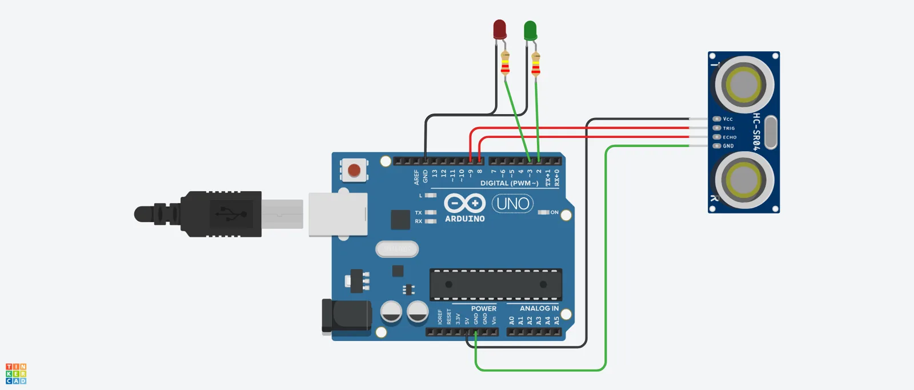

ParkEx
Monitoreo en tiempo real de estacionamientos privados, con verificación automática de las plazas reservadas para personas con discapacidad.
- Contexto
- III Semana Académica de Ingeniería en Logística, UTEC Rivera, octubre de 2026
- Equipo
- Cinco autores; soy cofundador
- Mi parte
- La idea, el lector de matrículas y la exposición
- Enlaces
- Código
Publicación
El problema
En un estacionamiento privado (un edificio, un shopping, un sanatorio) los conductores recorren niveles enteros buscando un lugar libre. Al mismo tiempo, las plazas reservadas para personas con discapacidad suelen quedar ocupadas por vehículos sin permiso, y el operador no tiene una forma práctica de enterarse.
ParkEx ataca las dos cosas con hardware de bajo costo: un sensor por plaza, una cámara solo en las plazas reservadas y un sitio web con el plano de cada nivel en vivo.
El proyecto empezó pensado para la vía pública. Lo acotamos a estacionamientos privados porque así se resolvían de raíz los problemas más serios: el clima afecta a los sensores, el OCR falla de noche y no existe un padrón público de permisos.
Mi rol
- La idea. Propuse el proyecto y soy uno de sus cofundadores.
- El lector de matrículas. Desarrollé en Java el programa que lee la chapa a partir de la cámara. Empezó como un repositorio propio, Matrícula OCR, y después se integró en ParkEx como el módulo
vision/, donde el equipo lo amplió. - La exposición. Participé en la presentación del proyecto en UTEC.
La evidencia
Cómo funciona
Recorré el camino de un auto que entra a una plaza reservada.
Diagrama Recorrido por pasos
Sensor ultrasónico + Arduino. Un HC-SR04 mide la distancia y el Arduino decide si la plaza está ocupada. No tiene WiFi ni credenciales: solo escribe por el puerto serie.
Puente serie (Node.js). Una computadora del parking traduce cada línea del Arduino en una petición a la API. Toda la conectividad vive en esa única máquina.
API y Supabase. Una API en Express valida el evento y lo guarda en PostgreSQL. Supabase Realtime avisa al instante a los navegadores conectados.
Lector de matrículas (Java). Si la plaza es reservada, la cámara toma varias fotos, el lector busca la chapa, comprueba el distintivo de discapacidad y reporta solo un hash de la matrícula y el resultado.
Plano en vivo y alertas. El plano SVG del nivel se repinta sin recargar la página. Si el vehículo no tiene distintivo, aparece una alerta para que la revise una persona: el sistema no sanciona.


El lector de matrículas
Leer una chapa con una cámara común falla seguido: reflejos, tornillos, ángulos. En lugar de confiar en una sola foto, el lector toma varias y solo acepta un resultado cuando las lecturas coinciden.
Del cuadro a la matrícula
- Detección. Con OpenCV busca rectángulos con forma de chapa, combinando bordes y luminosidad, porque las chapas claras sobre autos oscuros se separan mejor por brillo que por su contorno.
- Lectura. Cada candidato se amplía, se ecualiza y pasa por Tesseract con distintos umbrales.
- Normalización. El texto se ajusta a los formatos de chapa válidos: Mercosur (
ABC1234) y el uruguayo anterior (ABC123). - Consenso. Solo hay resultado si una misma matrícula aparece en al menos tres lecturas con confianza suficiente. Si no, se vota carácter por carácter. Si tampoco alcanza, el resultado es
no_verificable. - Privacidad. La matrícula sale de la computadora del parking solo como HMAC-SHA256. Las imágenes se procesan en memoria y se descartan.
| Foto | Lectura | Confianza | ¿Cuenta? |
|---|---|---|---|
| 1 | ABC1234 | 0,86 | Sí |
| 2 | A8C1234 | 0,71 | No coincide |
| 3 | ABC1234 | 0,82 | Sí |
| 4 | ABC1234 | 0,79 | Sí |
Tres coincidencias con confianza media de 0,82. Confianza combinada: 1 − (1 − 0,82)³ ≈ 0,99, por encima del mínimo de 0,80. Resultado: ABC1234, que se envía como hash. | |||
El lector funciona con fotos, webcams USB, la cámara del celular mediante DroidCam y streams HTTP. Está escrito en Java 17 con Maven, y tiene pruebas con JUnit 5 para el consenso, la normalización, el hash y la integración con Tesseract.
Una lectura dudosa nunca genera una alerta: el sistema prefiere no decir nada antes que acusar por error.
Reconocimiento
ParkEx se presentó en la III Semana Académica de Ingeniería en Logística de la Universidad Tecnológica del Uruguay (UTEC), Instituto Tecnológico Regional Norte, del 6 al 8 de octubre de 2026 en Rivera. El proyecto obtuvo los premios a Mejor exposición oral y a Excelencia académica.
El resumen del trabajo está publicado en el libro de resúmenes del evento:
Castro, J., Ligüera, C., Bazzano, L., Duarte, F. y Facchin, L. (2026). ParkEx: monitoreo en tiempo real de la ocupación de posiciones y verificación automatizada de plazas reservadas mediante sensórica y visión por computadora. En Libro de resúmenes de la III Semana Académica de Ingeniería en Logística. UTEC. doi.org/10.5281/zenodo.23377101